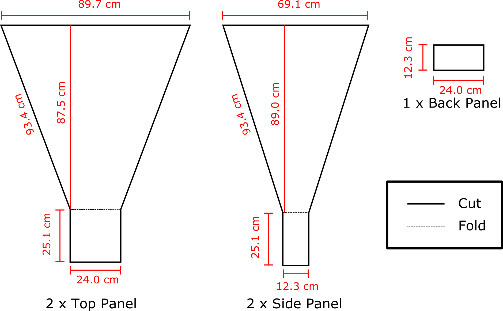
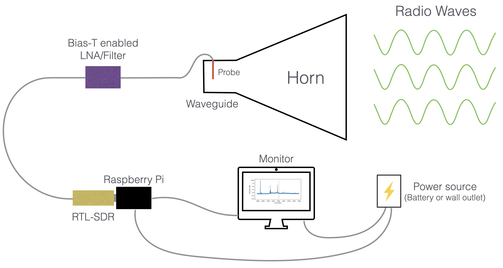

The telescope design section of this project is broken down into telescope design modules. It can be easily navigated through with the use of the side navigation bar.
As of now, we only have the horn design up, but check back later for more designs.
For each lesson there are multiple resources for the user: Along with the step-by-step instructions on this page, there is also a YouTube video presentation.
Horn and Waveguide Materials
- 4: 36” x 48” Double walled cardboard sheets.
- 75 square feet: Aluminum Foil.
- Hot Glue Gun with Hot Glue.
- Tape.
- Aluminum Foil Tape.
- X-acto Knife.
Probe Materials
For this section you can either buy the pieces individually or in packages online for more convenience. Individual Pieces - 1: SMA Coaxial Panel Mount Connector with Bulkhead Nut and Solder Cup
- 1: Gold plated locking washer
- 1: 7.5cm by 3.5cm Aluminum plate. Preferably .05" thick. (Soup can lid or scrap metal)
- 1: SMA Male to Female Right Angle 90-Degree Adapter Gold Plated
- 1: Bias-T Enabled LNA/Filter
- 1: 6.3cm Copper wire
- Packages from Online - Wlaniot SMA Female Connector SMA Coaxial Panel Mount Connector with Bulkhead Nut and Solder Cup Terminal 5pcs - SMA Connectors - SMA Right Angle Connectors - LNA/Filter - 6.3cm Copper wireRemember that these are merely the materials used for our own horn construction.
You are completely free to try new kinds of materials and make this "completely hackable" design your own!
Constructing the Horn
In our Low Frequency Cosmology lab at Arizona State University, we used top of
the line software to optimize our telescope horn to observe the 21 cm line.
This image shows our final optimized dimesions for the horn according to highest gain We tried many shapes and designs, but found that the parameters listed below
worked best for us. As always, we encourage you to test your own design, but for
ease in this project you can use the template we provide.
Build Your Horn
The picture below shows the horn dimensions that will be cut out on the cardboard sheets. Make sure to sketch out your deign with a pencil and follow the saying, "Measure twice, cut once" to ensure your dimensions are as accurate as possible.

Next, we need to line the cut out cardboard pieces with the aluminum foil. We only need the inside of the horn to be covered with foil, since that's the part where all of the light
particles will be focused into. Therefore, only one side of each piece needs to be covered.
Hot Tip #1: Make sure no adhesive or tape is exposed on the foil side because this will bring the horn's reflectivity down.
This can be accomplished by going over any exposed spots with foil tape.
Next we will need to use our hot glue gun to glue the edges of the horn together. Make sure to fold the waveguide edges shown in the schmeatic above so
that it creates a box on the bottom of the horn.
Hot Tip #2: Don't glue the back panel onto the horn quite yet. Set this aside for later to make the process of hooking up the electrical components easier. Hot Tip #3: You can use any method you're comfortable with to connect the cardboard pieces. It's a little easier to have a partner help to ensure stability,
but it can be done with just your own steady hand. One option is to let the hot glue set overnight between each panel, but doing all four sides at once works just as well - especially if you have a time constraint.
Now that all the pieces are glued together, we took our aluminum tape and lined the inside edges of the horn with it so that no glue was showing.
Again we want a completely reflective and conductive surface so that energy transfer from the photons and electrons can effectively travel to the waveguide and probe.
Below is a photo of what your horn will look like constructed.
Awesome! Our horn is finished, so it's time to start hooking up the electrical compenents.
Use a 1/4" drill bit to drill a hole in the middle of the aluminum plate. Our SMA connector is going to fit right into this hole, and the aluminum plate is used to stabilize it
Otherwise, the cardboard alone would be too flimsy. Drill a 1/4" hole into one of the wide sides of the waveguide 7cm down from the edge in the center.
Next, we will need to solder the copper wire to the solder cup.
*Note: remember how we set aside the small back panel piece? We did that to make it easy to reach through that opening of the horn and carry out these next steps.
In this order, we will connect the probe parts to the inside of the waveguide:
1.) Remove the gold nut and one of the gold locking washers from the SMA mount connector.
2.) Put the SMA connector section of the copper wire hook up through the aluminum plate.
3.) Place the gold locking washer and gold nut on top of the SMA on the other side of the aluminum plate in that order. Refer to the attached images for visual assistance.
4.) Push the SMA from the inside through the cardboard hole so the metal plate is on the inside of the horn.
Hot Tip #4:Use a pencil or similar instrument to widen the hole slightly after drilling. This will make screwing in the 90 degree connector much easier. 5.) Use foil tape to secure the metal plate and keep the inside of the horn completely reflective.
6.) Screw on the male to female 90 degree SMA connector from the outside of the horn.
7.) Screw on the male to male SMA connector to the 90 degree connector.
Next, we will start connecting our Bias-T enabled LNA/Filter.
Refer to the schematic below to see what order to connect the rest of the components.

Congratulations, you are ready to move on to the Software section of the project!